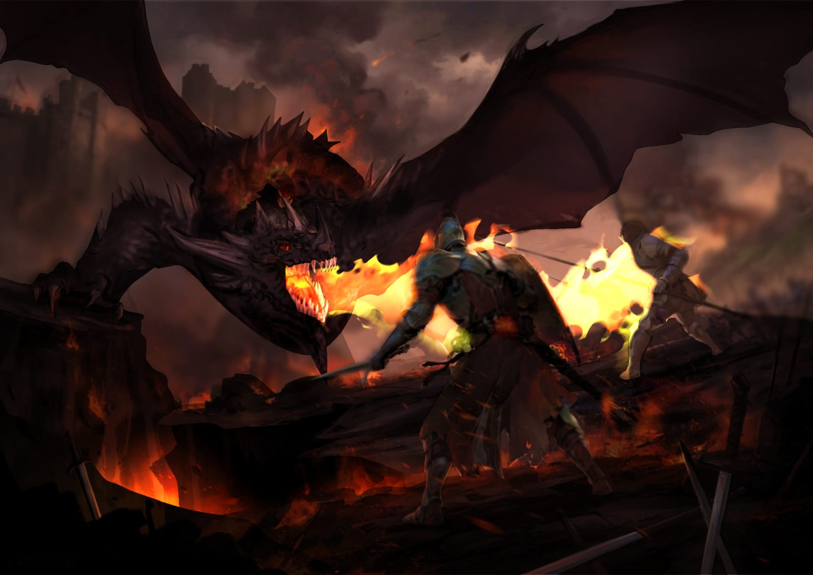
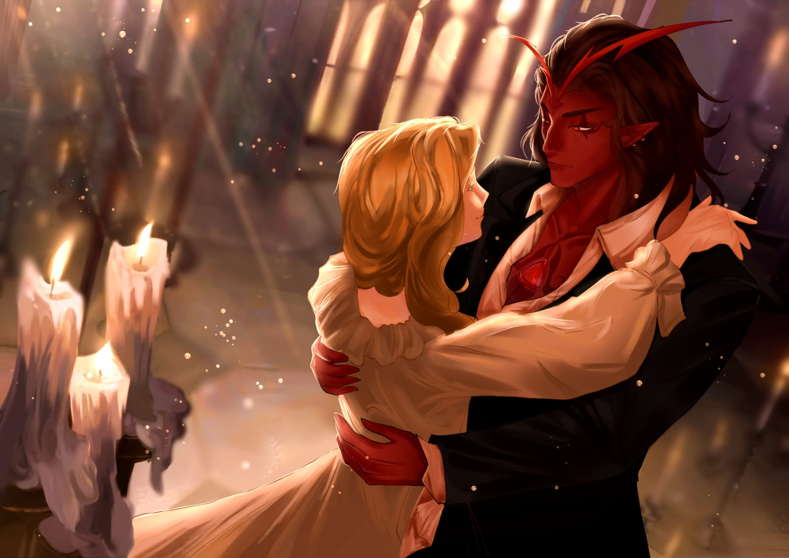
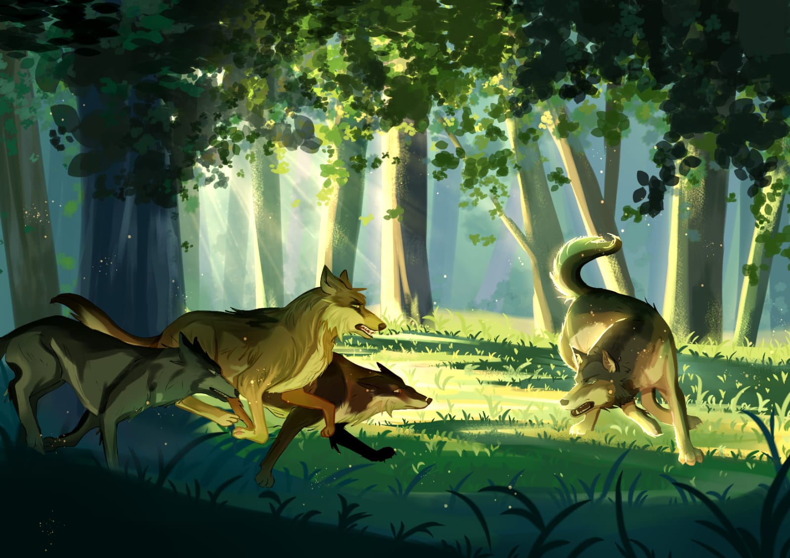
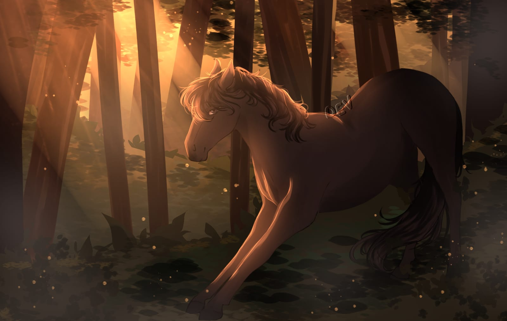
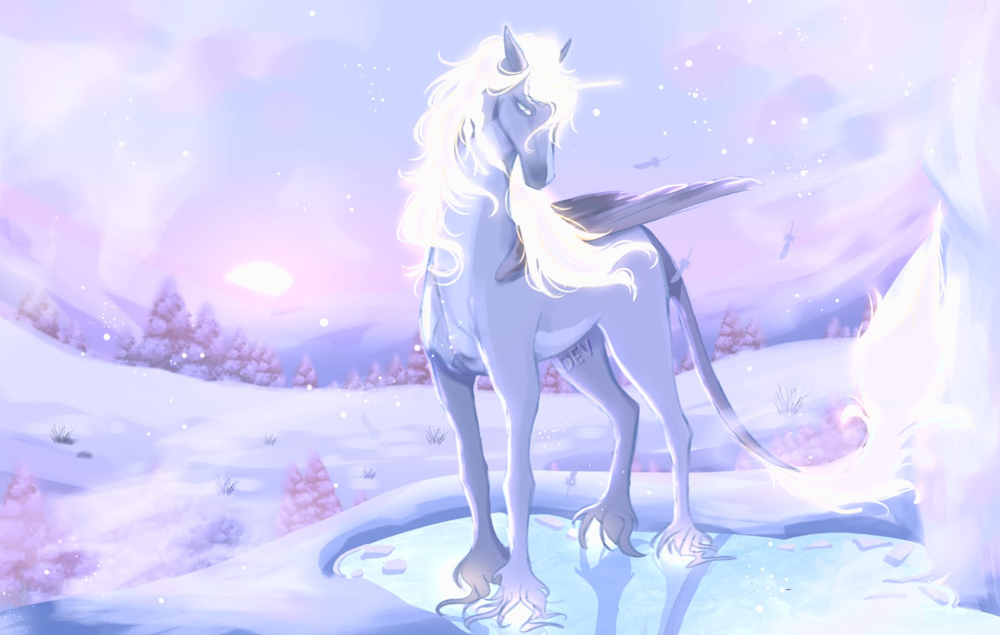
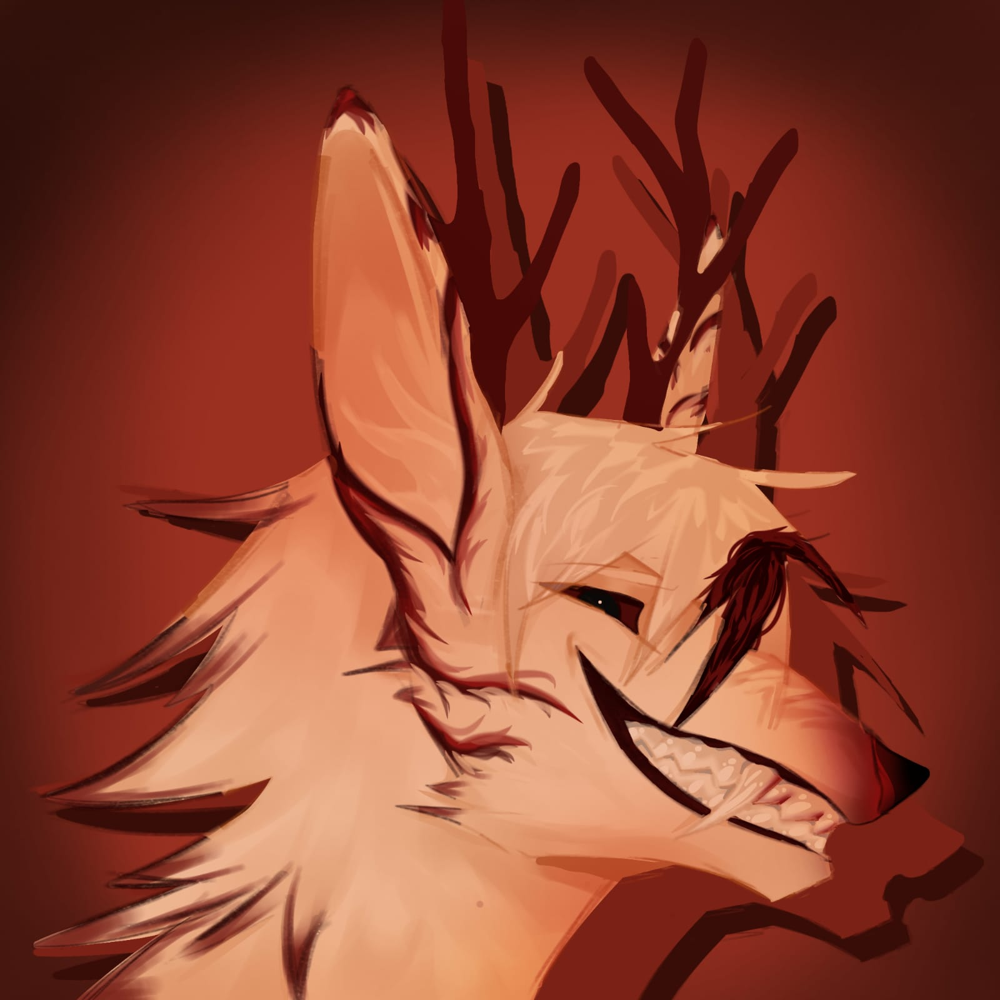
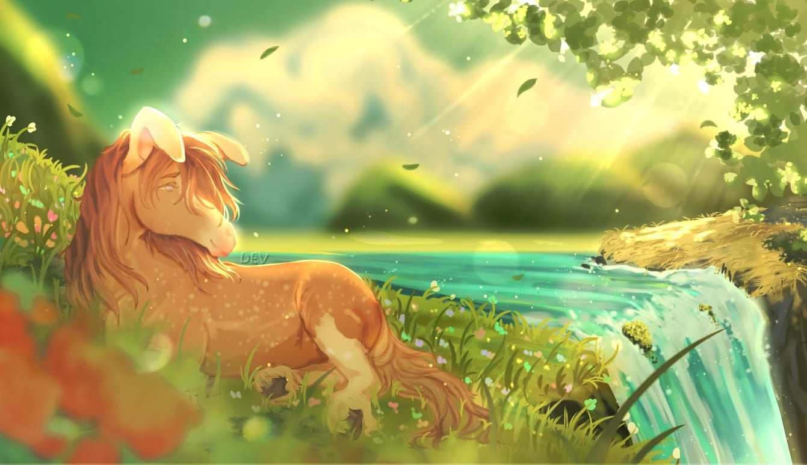
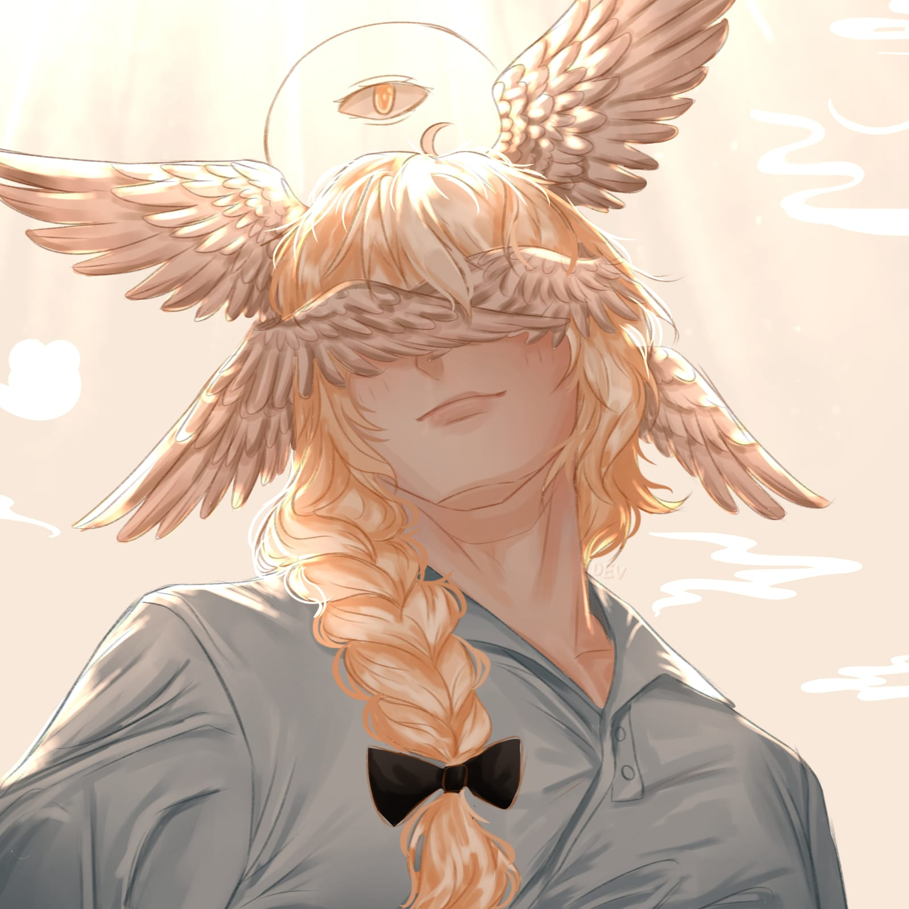

Ini adalah karya saya yang saya buat di ibis paint x hanya menggunakan hp dan jari, dalam karya ini saya menggambar sebuah naga yang sedang membakar prajurit. Waktu yang saya habiskan dalam proses gambar ini adalah 15 jam.

Ini adalah karya saya yang saya buat di ibis paint x hanya menggunakan hp dan jari, dalam karya ini saya menggambar sebuah pria dan wanita sedang berdansa. Waktu yang saya habiskan dalam proses gambar ini adalah 13 jam.

Ini adalah karya saya yang saya buat di ibis paint x hanya menggunakan hp dan jari, dalam karya ini saya menggambar sebuah kawanan serigala yang sedang menyerang serigala penyendiri. Waktu yang saya habiskan dalam proses gambar ini adalah 10 jam.

Ini adalah karya saya yang saya buat di ibis paint x hanya menggunakan hp dan jari, dalam karya ini saya menggambar seekor kuda di dalam hutan. Waktu yang saya habiskan dalam proses gambar ini adalah 6 jam.

Ini adalah karya saya yang saya buat di ibis paint x hanya menggunakan hp dan jari, dalam karya ini saya menggambar seekor unicorn di padang salju. Waktu yang saya habiskan dalam proses gambar ini adalah 5 jam.

Ini adalah karya saya yang saya buat di ibis paint x hanya menggunakan hp dan jari, dalam karya ini saya menggambar karakter fursona saya. Waktu yang saya habiskan dalam proses gambar ini adalah 4 jam.

Ini adalah karya saya yang saya buat di ibis paint x hanya menggunakan hp dan jari, dalam karya ini saya menggambar kuda di tepi air terjun. Waktu yang saya habiskan dalam proses gambar ini adalah 10 jam.

Ini adalah karya saya yang saya buat di ibis paint x hanya menggunakan hp dan jari, dalam karya ini saya menggambar karakter milik orang lain yang bersayap. Waktu yang saya habiskan dalam proses gambar ini adalah 4 jam.